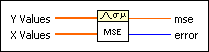
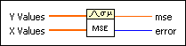

MSE VI
Owning Palette: Probability & Statistics VIs
Requires: Full Development System
Computes the mean square error (mse) of the input sequences X Values and Y Values.

 Add to the block diagram Add to the block diagram |
 Find on the palette Find on the palette |
Owning Palette: Probability & Statistics VIs
Requires: Full Development System
Computes the mean square error (mse) of the input sequences X Values and Y Values.

| Add to the block diagram |
Find on the palette |
 |
Y Values is an array of values. If the number of elements in Y Values is different from the number of elements in X Values, the VI computes mse based on the sequence that contains the fewest elements and returns a warning. |
|
X Values is an array of values. If the number of elements in X Values is different from the number of elements in Y Values, the VI computes mse based on the sequence that contains the fewest elements and returns a warning. |
 |
mse is the mean square error. If one of the input sequences is an empty array, the value of mse is NaN. |
 |
error returns any error or warning from the VI. You can wire error to the Error Cluster From Error Code VI to convert the error code or warning into an error cluster. |
The VI calculates mse using the following equation.
where n is the number of data points, xi is the ith element of X Values, and yi is the ith element of Y Values.
Refer to the Statistics Solver VI in the labview\examples\Mathematics\Probability and Statistics directory for an example of using the MSE VI.
 Open example Find related examples
Open example Find related examples